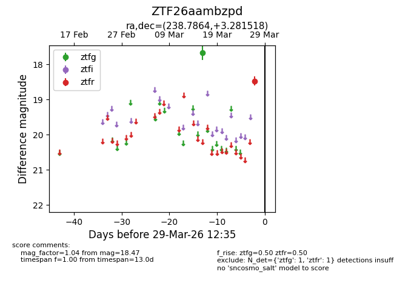
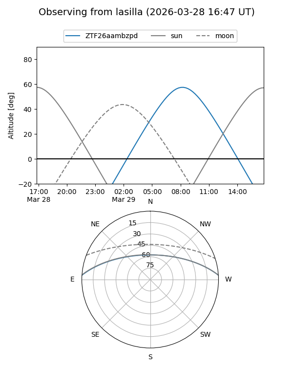
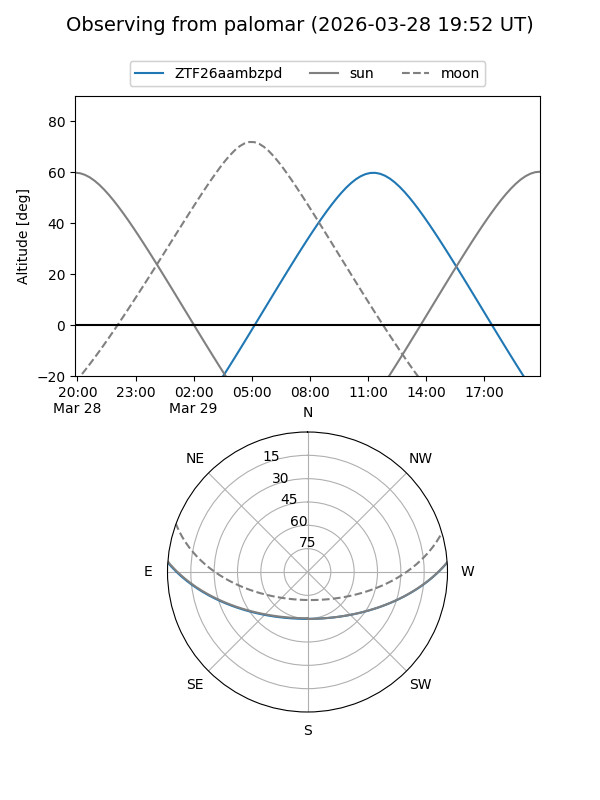

ZTF26aambzpd
Target ZTF26aambzpd at 2026-03-29 12:38
Aliases and brokers:
FINK: link
Lasair: link
ALeRCE: link
alt names
ZTF26aambzpd (ztf,fink_ztf)
Coordinates:
equatorial (ra, dec) = 238.7864,+3.28152
equatorial (HMS+DMS) = 15:55:08.74,+03:16:53.47
galactic (l, b) = (12.6054,+40.10123)
Flags:
Photometry:
last ztfg=17.66, ztfr=18.47
1 ztfg, 1 ztfr detections
Lightcurve

Visibility


Additional plots